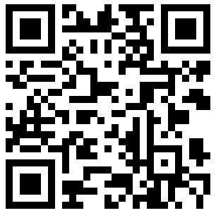
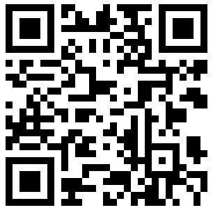
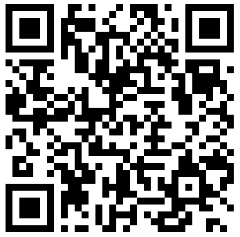

Rosebotte AnswerMe
Rosebotte AnswerMe is a programm platform created to allow your android device execute commands received via SMS. In this version it is possible to receive email or SMS with the lists of missed calls and unread SMS. AnswerMe can turn on Wi-Fi connection or make sending via mobile data if allowed, then it turns Wi-Fi off.
Main use cases for AnswerMe.
1. If you forget your phone at home you can just send SMS from your collegue's device or from the Iternet or Skype to receive the list of missed calls and SMS with content.
2. You are going to go on vacation abroad and you want to leave you phone at home thus not to use roaming, but you are curious who had called and sent SMS.
Instructions.
To do that just install Rosebotte AnswerMe application on your android phone, adjust email settings (for gmail it is enough just to change login and password). The password is stored securily on your device, although of course you can use application specific password, for example, for gmail. Then specify the commands' patterns that AnswerMe will search in each incoming SMS. Try once to ensure setting are good. Also you may specify whether it's allowed to start Wi-Fi when it is turned off, and whether it's allowed to use mobile data in case of Wi-Fi connection absence. But even if you left this options unmarked you can override this settings by specifying special flags in the SMS containing your command.
To receive AnswerMe email with all information needed just send specific SMS to your device. This SMS must contain the pattern you specified in settings for email, the PIN code and optionally flags for overriding settings mentioned above. Use "FW" (stands for force Wi-Fi) to enable "Start Wi-Fi" setting for this time and "FD" (stands for force data) for "Use Mobile Data". All this specificators could be space-separated or not.
If your device is not connected with Wi-Fi at the moment of processing your AnswerMe request, then the programm will check "Start Wi-Fi" setting (or flag if you have provided it in SMS). If it is not allowed to start Wi-Fi, then, if option "Use Mobile Data" is set on (or you have provided the "FD" flag in SMS) and mobile data is activated, AnswerMe will make an attempt to send email via mobile data connection. But if it's allowed to start Wi-Fi then next series of attempts will take place: the programm will try to start Wi-Fi on your device, try to auto-connect to network, try to search known networks and connect to one of them, try to search open networks around device and will try to connect to strongest network. If the programm will succeed and connect to one of networks with Internet connection available, then the AnswerMe email will be sent by using account you have provided in the settings and Wi-Fi will be turned off. If the network search fails, then Wi-Fi adaptor will be turned off and programm will try to send email via mobile data as described above.
To receive AnswerMe SMS you should do the same: provide the pattern and the PIN, but remember to add telephone number in international standard form, without additional symbols such as braces.
Note, that patterns are intentionally case-sensitive and flags are not.
For example. You set "ANSWERMAIL" as a pattern in correspond setting for receiving AnswerMe email and 2233 as a PIN. And for SMS "ANSWERSMS" and 5577, respectively. Then just send an SMS with content like bellow, all of them are correct:
ANSWERMAIL 2233
ANSWERMAIL2233
ANSWERMAIL FW 2233
ANSWERMAIL Fd 2233 fw
2233 ANSWERMAIL
ANSWERSMS 5577 +441237005060
5577 ANSWERSMS +44 123 7005060
Versions.
There are two versions of Rosebotte AnswerMe programm. Full version can send either emails and SMS, and the Green Edition is for emails only.
 



{kind=link}
{kind=link}
{kind=link}
{kind=link}